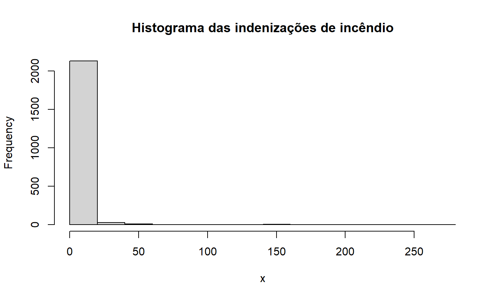

Revisão de Inferência
Estimador de Máxima Verossimilhança
Estimador do Método de Momentos
Verificação da Adequação do Ajuste
31 de março de 2023
Revisão de Inferência
Estimador de Máxima Verossimilhança
Estimador do Método de Momentos
Verificação da Adequação do Ajuste
O que é inferência paramétrica?
O analista assume que \((x_1,...,x_n)\) são realizações de uma amostra aleatória \((X_1,...,X_n)\), tal que \(X_i\) são variáveis aleatórias independentes com essa distribuição.
\[X \sim F(.; \boldsymbol \theta) \]
\[F(x; \theta) = (1 - e^{-\theta x}) \,\mathbb{1}_{\mathbb{R}_+}(x) \] para \(\theta \in \mathbb{R}_+\).
Nosso objetivo é encontrar um estimador \(\hat{\boldsymbol \theta}\) para \(\boldsymbol \theta\).
Depois de encontrar um estimador, o analista pode obter suas medidas de interesse (média, variância, quantis, probabilidade de sobrevivência, etc.) a partir da distribuição estimada \(F(x; \hat{\boldsymbol \theta})\).
\[\mathcal{L}(\boldsymbol \theta, x_1, \dots, x_n) = \prod_{i=1}^n f_X(x_i; \boldsymbol \theta) \]
É mais conveniente maximizar a log-verossimilhança com relação a \(\boldsymbol \theta\).
Para algumas distribuições, conseguimos encontrar uma forma fechada para o EMV. Caso isso não seja possível, podemos utilizar otimização númerica para maximizar a log-verossimilhança.
No R, o pacote fitdistrplus tem funções implementadas para encontrar o EMV de várias distribuições.
(Para instalar o pacote CASdatasets: http://cas.uqam.ca/)
## dados seguro contra terceiros Itália
data("itamtplcost")
x = itamtplcost$UltimateCost/10^6
summary(x)
## Min. 1st Qu. Median Mean 3rd Qu. Max. ## 0.002161 0.627719 0.844011 1.015352 1.224316 6.639500
## estimador máxima verossimilhança fgamEMV = fitdist(x, "gamma", method="mle") fgamEMV
## Fitting of the distribution ' gamma ' by maximum likelihood ## Parameters: ## estimate Std. Error ## shape 2.398655 0.1489696 ## rate 2.362486 0.1631542
summary(fgamEMV)
## Fitting of the distribution ' gamma ' by maximum likelihood ## Parameters : ## estimate Std. Error ## shape 2.398655 0.1489696 ## rate 2.362486 0.1631542 ## Loglikelihood: -385.1474 AIC: 774.2947 BIC: 782.5441 ## Correlation matrix: ## shape rate ## shape 1.0000000 0.8992915 ## rate 0.8992915 1.0000000
plot(fgamEMV)
Também podemos encontrar estimadores para os parâmetros usando o Método de Momentos.
Ele consiste em encontrar o valor de \(\boldsymbol \theta\) que iguala os momentos teóricos aos momentos empíricos:
\[\mathbb{E}(X^k | \boldsymbol \theta) = \frac{1}{n}\sum_{i=1}^n x_i^k \] para \(k=1,\dots,d\), onde \(d\) é o número de parâmetros a estimar, e \(x_i\) são as \(n\) observações da variável \(X\).
Por exemplo, considere \(X \sim Gama(\alpha, \lambda)\).
A estimação do Método de Momentos (MME) consiste em encontrar a solução para:
\[\begin{cases} \alpha/\lambda &= \bar{x}_n \\ \alpha/\lambda^2 &= m_2 = \frac{1}{n}\sum_{i=1}^n (x_i - \bar{x}_n)^2 \end{cases} \quad \Longleftrightarrow \quad \begin{cases} \alpha &= (\bar{x}_n)^2 / m_2 \\ \lambda &= \bar{x}_n/m_2 \end{cases}\]
## estimador método de momentos fgamEMM = fitdist(x, "gamma", method="mme") cbind(EMV=fgamEMV$estimate, EMM=fgamEMM$estimate)
## EMV EMM ## shape 2.398655 2.229563 ## rate 2.362486 2.195851
Método dos Quantis (Seção 2.2.3 do livro)
consiste em igualar os quantis teóricos aos quantis empíricos
Método de Máxima Bondade de Ajuste ou Distância Mínima (Seção 2.2.4)
consiste em encontrar o estimador que minimiza alguma medida de distância entre a distribuição acumulada empírica e teórica
Como escolher entre métodos de estimação ou distribuições?
Vamos ver como verificar a adequação de ajuste com métodos gráficos e numéricos.
Os dados são divididos em \(k\) intervalos \((a_{j-1},a_j]\), com \(j=1,\dots,k\);
as frequências \(f_j\), ou seja, o número de observações em cada intervalo, é calculada;
o gráfico plota os retângulos com base \((a_{j-1},a_j]\) e altura \(f_j\) ou \(f_j/n\).
## histograma e densidades das distribuições ajustadas
denscomp(list(fgamEMV, fgamEMM), legendtext=c("EMV","EMM"), fitcol=1:2, fitlwd=2,
main="Histograma e densidades gama ajustadas")
## histograma e densidade empírica hist(x, prob=TRUE, ylim=c(0, 1), main="Histograma e densidade empírica") lines(density(x), lty=5, lwd=2, col=4)
\[F_n(x) = \sum_{i=1}^n \mathbb{1}_{x_i \leq x} \]
danishuni contém dados de perda em incêndios de uma resseguradora em Copenhague, na Dinamarca, entre 1980 e 1990.## Dados de perda em incêndios na Dinamarca
data("danishuni")
head(danishuni)
## Date Loss ## 1 1980-01-03 1.683748 ## 2 1980-01-04 2.093704 ## 3 1980-01-05 1.732581 ## 4 1980-01-07 1.779754 ## 5 1980-01-07 4.612006 ## 6 1980-01-10 8.725274
x = danishuni$Loss hist(x, main="Histograma das indenizações de incêndio")

## ajustando as distribuições
fgam = fitdist(x, "gamma", lower=0) # gama
fpar = fitdist(x, "pareto", start=list(shape=2, scale=2), lower=0) # pareto
# mistura gama e pareto (última aula)
dmixgampar = function(x, prob, nu, lambda, alpha, theta)
prob*dgamma(x, nu, lambda) + (1-prob)*dpareto(x, alpha, theta)
pmixgampar = function(q, prob, nu, lambda, alpha, theta)
prob*pgamma(q, nu, lambda) + (1-prob)*ppareto(q, alpha, theta)
fmixgampar = fitdist(x, "mixgampar",
start=list(prob=1/2, nu=1, lambda=1, alpha=2, theta=2), lower=0)
## Resultados dos modelos separados (Gama e Pareto) e modelo de mistura cbind(SINGLE= c(NA, fgam$estimate, fpar$estimate), MIXTURE=fmixgampar$estimate)
## SINGLE MIXTURE ## NA 0.6849901 ## shape 1.2976762 10.8671174 ## rate 0.3833939 6.5413112 ## shape 5.3689492 5.4070157 ## scale 13.8424418 29.9966023
## Gráfico das funções de distribuição ajustadas
cdfcomp(list(fgam, fpar, fmixgampar), xlogscale=TRUE, datacol="grey", fitlwd=2,
legendtext=c("Gama","Pareto","Gam-Par"), main="Funções de distribuição ajustadas")
Nos gráficos anteriores, comparamos a densidade empírica com as densidades ajustadas, e a função de distribuição empírica com as funções de distribuição ajustadas.
O QQ-plot consiste em plotar diretamente os valores dos quantis (inverso da função de distribuição) empíricos versus teóricos.
## qqplot
qqcomp(list(fgam, fpar, fmixgampar), xlog=TRUE, ylog=TRUE, main="QQ-plot Dados de Incêndio",
legendtext=c("Gama","Pareto","Gam-Par"), fitpch=c(4,20,1))
A função plot aplicada a um objeto do tipo fitdist retorna os gráficos que acabamos de ver:
histograma com a densidade ajustada;
gráfico da função de distribuição acumulada ajustada;
qq-plot com quantis teóricos e empíricos;
e pp-plot com probabilidades acumuladas teóricas e empíricas.
Podemos usar testes estatísticos para complementar a nossa verificação da qualidade do ajuste.
Para distribuições contínuas, podemos usar as distâncias mencionadas na Seção 2.2.4 entre as funções de distribuição empírica e teórica.
Para distribuições discretas, o teste mais comum é a estatística qui-quadrado:
\[\Delta^2 = \sum_{i=0}^m \frac{(n_i - n.p_i)^2}{n.p_i} \] onde \(n_i\) é a frequência empírica para a célula \(i\), \(n\) é o número total de observações; \(p_i=P(X=i; \,\theta)\) é a probabilidade teórica, e \(m\) é o número de células.
Na prática, o número de células é fixado pelo analista, ou escolhido tal que as frequências observadas sejam maiores do que 5 e \(p_i\) é substituído por \(\hat{p}_i\).
Sob \(H_0\) (o ajuste é adequado), \(\Delta^2\) converge em distribuição para \(\chi^2(m-d-1)\) (onde \(d\) é o número de parâmetros).
Além disso, ainda podemos considerar os critérios AIC e BIC para esse teste.
Esse teste está disponível na função gofstat do pacote fitdistrplus.
Dados: tplclaimnumber do pacote CASdatasets contém dados de apólices de seguro contra terceiros. Os dados são o número de indenizações registradas para cada apólice com duração de um ano.
Vamos ajustar as distribuições Poisson, Binomial Negativa, e uma Poisson modificada em zero.
data(tplclaimnumber) summary(tplclaimnumber)
## policy.id claim.number driver.age ## Min. : 1 Min. : 0.00000 Min. : 18.0 ## 1st Qu.:1157951 1st Qu.: 0.00000 1st Qu.: 34.0 ## Median :2272152 Median : 0.00000 Median : 44.0 ## Mean :2621857 Mean : 0.03904 Mean : 45.5 ## 3rd Qu.:4046274 3rd Qu.: 0.00000 3rd Qu.: 55.0 ## Max. :6114330 Max. :16.00000 Max. :100.0
x = tplclaimnumber$claim.number fpois = fitdist(x, "pois") # poisson fnbinom = fitdist(x, "nbinom") # binomial negativa
## funções para definir a distribuição poisson modificada em zero dpoisZM <- function(x, prob, lambda) prob*(x == 0) + (1-prob)*(x > 0)*dpois(x-1, lambda) ppoisZM <- function(q, prob, lambda) prob*(q >= 0) + (1-prob)*(q > 0)*ppois(q-1, lambda) qpoisZM <- function(p, prob, lambda) ifelse(p <= prob, 0, 1+qpois((p-prob)/(1-prob), lambda))
fpoisZM = fitdist(x, "poisZM", start=list(prob=sum(x == 0)/length(x), lambda=mean(x)),
lower=c(0,0), upper=c(1, Inf)) # poisson modificada
gofstat(list(fpois, fnbinom, fpoisZM), chisqbreaks=c(0:4, 9),
discrete=TRUE, fitnames=c("Poisson","NegBinomial","ZM-Poisson"))
## Chi-squared statistic: Inf 11765679 Inf ## Degree of freedom of the Chi-squared distribution: 5 4 4 ## Chi-squared p-value: 0 0 0 ## the p-value may be wrong with some theoretical counts < 5 ## Chi-squared table: ## obscounts theo Poisson theo NegBinomial theo ZM-Poisson ## <= 0 653047 6.520559e+05 6.530606e+05 6.530492e+05 ## <= 1 23592 2.545374e+04 2.353633e+04 2.350864e+04 ## <= 2 1299 4.968076e+02 1.326372e+03 1.411925e+03 ## <= 3 62 6.464481e+00 8.372804e+01 4.239999e+01 ## <= 4 5 6.308707e-02 5.568862e+00 8.488455e-01 ## <= 9 5 4.957574e-04 4.104209e-01 1.290002e-02 ## > 9 3 0.000000e+00 7.649401e-07 0.000000e+00 ## ## Goodness-of-fit criteria ## Poisson NegBinomial ZM-Poisson ## Akaike's Information Criterion 226880.4 225375.1 225585.7 ## Bayesian Information Criterion 226891.8 225398.0 225608.5